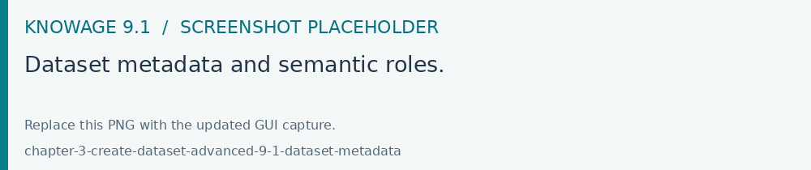

Dataset metadata and advanced options
Review the metadata after defining and previewing the dataset. Each column’s data type and semantic role affect filtering, aggregation and visualization.
Field |
Use |
|---|---|
Data type |
Match the returned values, especially dates and numeric measures. |
Attribute / Measure |
Use attributes for categories and measures for quantitative analysis. |
Description |
Explain the column’s meaning for authors and readers. |
Personal data / Encrypted / Represents a subject |
Describe the data for the installation’s privacy and encryption features. |

Fig. 94 Dataset metadata and semantic roles.
Persistence and cache
The Advanced options allow eligible non-parametric datasets to persist results for reuse. The installation must have an appropriate persistence/cache data source and the required database privileges. Review refresh behavior against the expected freshness of the source data.
Dashboard dataset cache and refresh settings are configured separately in the Dashboard. See Create a Dashboard and Server settings.
Before publishing, preview representative rows and verify column aliases, aggregations, visibility and any privacy settings under the consuming roles.